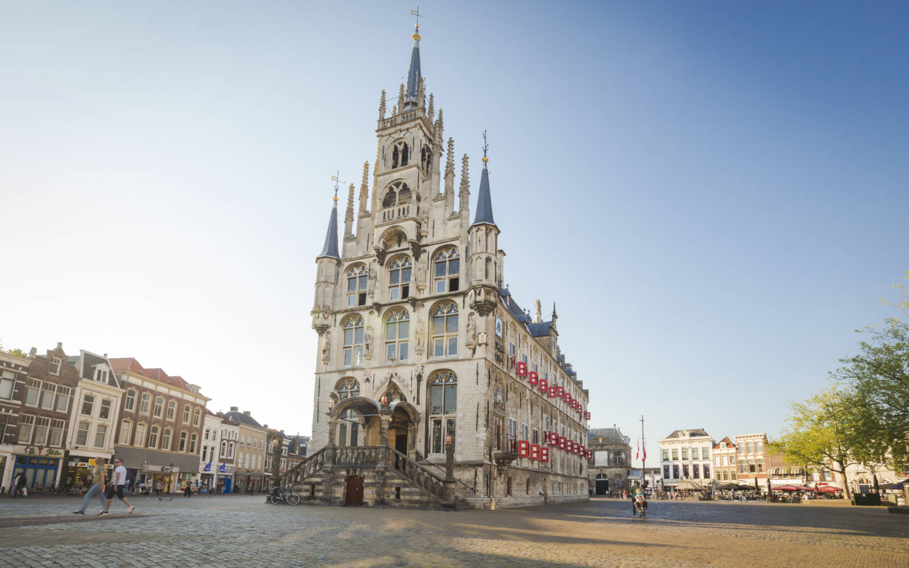
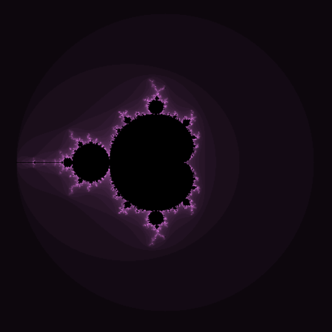

Bessel Withoos
I am Bessel, 19 years old and I live with my parents, younger brother and five-year-old dog in Gouda. I went to high school in Rotterdam, where I unfortunately failed the VWO exam in my exam year. I took a year of VAVO after this in order to still pass the subjects of Dutch and mathematics.
In high school, I had chosen the subject of computer science. Although the classes were not very spectacular, I found the projects very educational and appealed to me greatly to continue with this outside of school.

Before I was even thinking about studying at Utrecht University, I had made the choice to go study Architecture at TU Delft. That study is a numerus fixus study and I was among the top 450 admitted to the stude after making the assignment. Unfortunately, I didn't get my degree that year and started thinking to myself whether I actually wanted to study architecture in Delft.

Now that I have started studying here, I do not regret my choice. I find the study extremely interesting and the assignments I get I enjoy making. My first assignment for the computer science subject was to create my own Mandelbrot figure in a programme written in C#. I happened to do that assignment together with the person I worked with on this website!
